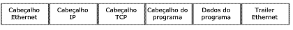

| Modelo OSI |
|---|
| Aplicação |
| Apresentação |
| Sessão |
| Transporte |
| Rede |
| Enlace |
| Física |
| Modelo TCP/IP |
|---|
Aplicação |
| Transporte |
| Rede |
| Física |
| Comunicação com o Gateway |
Quando um pacote é transmitido além dos dados são enviados os cabeçalhos de cada protocolo utilizado em cada camada
